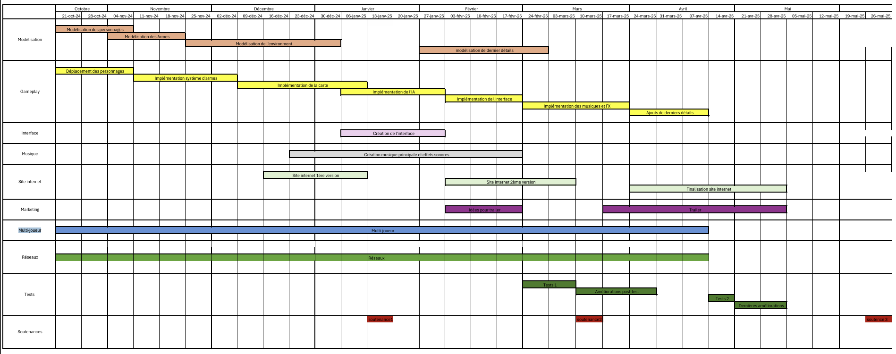

Commencement
Le projet a débuté par une phase de réflexion approfondie en septembre 2024. Cette étape a permis d’établir les bases conceptuelles de "Monkey Heisty" et d’explorer les idées de gameplay, les mécaniques de jeu et l’identité visuelle. Ces réflexions ont conduit à une définition claire des objectifs du projet et à l'identification des outils nécessaires pour sa réalisation. En parallèle, le cahier des charges fonctionnel et technique a été élaboré pour définir les fonctionnalités attendues et préciser les technologies à utiliser et les étapes de développement.
